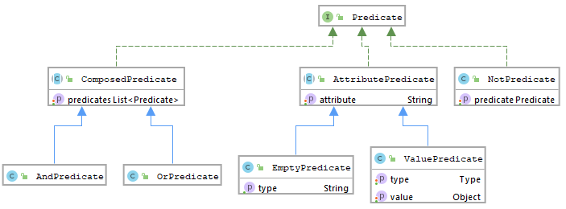

Типы данных¶
Система типов данных¶
В ECOS внедрена собственная система типов, на основе которой настраиваются следующие аспекты:
Форма Действия Связи Тип UI (react/share) Типы ECOS являются модулями ECOS и располагаются по следующим путям:
В alfresco: ${module_id}/src/main/resources/alfresco/module/${module_id}/model/type/**/*.json
В микросервисах: resources/ecos-app/model/type/**/*.json
У всех типов должен быть родитель. По умолчанию - model/type@base (базовый тип)
Для просмотра существующих типов и их редактирования создан журнал «Типы кейсов». Чтобы в него попасть следует открыть меню и перейти в системные журналы:
Пример описания типа
Связь с типом alfresco Чтобы у записей с определенным типом alfresco был нужный тип ECOS можно сделать следующее (на выбор):
Для новых нод:
Сделать аспект, который унаследован от etype:hasType и переопределить там свойство etype:type (!!!тип указывать без emodel/type@ префикса!!!). После этого можно навесить данный аспект на тип alfresco и новые ноды будут иметь нужный тип ECOS. В варианте создания добавить атрибут _type=emodel/type@нужный-тип. Новые ноды, создаваемые через данный вариант создания будут иметь нужный тип; Для новых и старых нод:
Добавить Registrar бин, который зарегистрирует связь тип alfresco → тип ECOS:
ecosTypeService.register(QName nodeType, Function<AlfNodeInfo, RecordRef> evaluator)
Для примера см. конфигурацию ru.citeck.ecos.node.EcosTypeConfiguration
Маппинг старых типов и видов на новые типы кейсов Старые типы и виды кейса записываются в полях tk:type и tk:kind в виде nodeRef. Например:
tk:type = workspace://SpacesStore/contracts-cat-doctype-contract (Договор)
tk:kind = workspace://SpacesStore/contracts-cat-contract-services (Услуги)
Для преобразования в новый тип кейса следует взять значения из этих полей, убрать у каждого из них workspace://SpacesStore/ и оставшиеся части объединить в одну строку через «/» (слева - tk:type, а справа tk:kind):
contracts-cat-doctype-contract/contracts-cat-contract-services
Если tk:kind не задан, то правой части и знака «/» не нужно. Например:
contracts-cat-doctype-contract
При добавлении новых типов кейсов следует учитывать, что тип с tk:kind должен наследоваться от типа без tk:kind чтобы унаследовать его свойства:
Форма Выбор формы для типа позволяет привязать конкретную форму без использования ключей.
Таким образом при редактировании, создании или просмотре записи с типом, у которого задана форма, будет использована указанная форма и ключи (_formKey) будут игнорироваться если они явно не заданы при вызове формы.
Форма при наличии типа у записи выбирается следующим образом:
Если вызывающая сторона явно указала formKey, то открывается форма с этим ключом
Если вызывающая сторона явно указала formId, то открывается форма с этим Id
Если вызывающая сторона указала только редактируемый/просматриваемый recordRef, то загружаются formId из типа у записи и _formKey из самой записи. Если formId пустой (нет типа или у типа и его родителей нет формы), то форма ищется по _formKey. Если же formId нашелся, то атрибут _formKey игнорируется и открывается форма по formId.
Поле формы в типах поддерживает наследование и если в типе формы не нашлось, то проверяется его родитель и далее до первой не пустой формы или когда дойдем до базового типа.
Действия Действия описываются в виде массива идентификаторов действий в системе. Для того как создавать новые действия см. ECOS Actions
Действия в типе можно унаследовать от родителя если выставить флаг «inheritActions»: true
Связи !Связи наследуются! Т.е. чтобы добавить связь «Связан с» достаточно указать в качестве parent’а model/type$base т.к. там уже настроена эта связь
Связи (associations) настраиваются для отображения, добавления и удаления в виджете связей на карточке документа.
Связь описывается следующей структурой:
id в данном случае для Alfresco должно совпадать с QName существующей в модели связи. Для добавления произвольных связей (без обязательного наличия связи в модели) нужна доработка.
Тип UI В поле attributes типа можно указать тип интерфейса (новый - react или старый - share), который будет использоваться для типа.
Данная настройка влияет следующие элементы системы:
Перенаправление /share/page/case-details → /v2/dashboard если uiType === «react» Ссылки в меню на журналы ведут на /share/page/journals2 если uiType === «share» и на /v2/journals если uiType === «react». Реализовано как для старого так и для нового интерфейса. Настройка может возыметь эффект только спустя час т.к. конфигурацию меню мы кэшируем в сессии браузера (для сброса можно открыть браузер в инкогнито режиме или закрыть все открытые окна браузера и открыть заново). Для связи журнала с типом ECOS возможно потребуется доп. настройка в конфигурации журнала. Система пытается найти связь журнала с типом следующим образом:
через поле tk:relatesToType в ноде журнала через параметр <option name=»typeRef»> в конфигурации журнала через значение поля tk:type по умолчанию в модели типа который задан в <option name=»type»> Если журнал не связался с типом, то рекомендуется использовать второй способ связи.
Язык предикатов¶
Предназначение: язык, с которым легко работать как на frontend так и на backend (модифицировать, анализировать и пр.)
Абстрактное определение предиката - это некоторая функция, которая на вход получает элемент множества и возвращает True/False
В библиотеке ecos-records добавлена реализация данной концепции.
Есть два агрегатных состояния предиката - JSON или JAVA классы. Для конвертации между этими двумя состояниями есть сервис PredicateService и методы writeJson/readJson
Java представление - это просто модель. Обработка модели - отдельная задача, которая лежит на источниках данных или на преобразователях запросов
(например для запросов в alfresco предикаты трансформируются в fts-alfresco запрос в классе PredicateToFtsAlfrescoConverter).
JAVA представление¶
{kind=link}
Predicate - базовый маркерный интерфейс без методов
AttributePredicate - предикат связанный с некоторым аттрибутом
EmptyPredicate - предикат «Значение аттрибута пустое»
ValuePredicate - предикат «Значение аттрибута равно/содержит/одно из/больше/меньше/похоже/больше или равно/меньше или равно
Тип сравнения определяется полем type. Значение для сравнения в поле value
NotPredicate - предикат «НЕ какой_то_другой_предикат»
ComposedPredicate - предикат, который объединяет другие предикаты
AndPredicate - предикат И
OrPredicate - предикат ИЛИ
VoidPredicate - пустой предикат, который получается если t (тип) не задан. Как правило означает, что при фильтрации/поиске никаких проверок не нужно (берем все записи).
JSON представление¶
{
"t": "and",
"val": [
{
"t": "or",
"val": [
{
"att": "country",
"t": "contains",
"val": "milan"
},
{
"att": "state",
"t": "contains",
"val": "milan"
},
{
"att": "name",
"t": "contains",
"val": "milan"
}
]
}
]
}
В поле «t» записывается тип предиката, в «att» название аттрибута (если тип предиката его требует) и в «val» значение (опять же имеет смысл не для всех предикатов).
Для конвертации java предикатов в json и обратно:
String predicateStr = Json.getMapper().toString(predicate);
Predicate predicate = Json.getMapper().read(predicateStr, Predicate.class);
Для чтения предикатов из запроса RecordsQuery:
Predicate predicate = recordsQuery.getQuery(Predicate.class);
Типы предикатов: .. image:: _static/predicate_lang_2.jpg
- scale
70 %
- align
left
Дополнительные возможности предикатов: .. image:: _static/predicate_lang_3.jpg
- scale
70 %
- align
left
Пример¶
Задача
Реализовать модель testModel состоящую из
- Типов:
car, со свойствами mass, speed, year;
producer, c одним свойством producerName;
Аспекта trunk с одним свойством shaftCount.
Ассоциации между producer и car, один ко многим соответственно.
Добавить к ней локализации en и ru
Реализация¶
Создать в «alfrescomoduleidocs-repomodel" файл модели testModel.xml:
<model name="test:car" xmlns="http://www.alfresco.org/model/dictionary/1.0">
<imports>
<import uri="http://www.alfresco.org/model/dictionary/1.0" prefix="d" />
<import uri="http://www.alfresco.org/model/datalist/1.0" prefix="dl" />
</imports>
<namespaces>
<namespace uri="http://www.citeck.ru/model/testModel/1.0" prefix="test"/>
</namespaces>
<types>
<type name="test:car">
<parent>dl:dataListItem</parent>
<properties>
<property name="test:mass">
<type>d:int</type>
</property>
<property name="test:speed">
<type>d:int</type>
</property>
<property name="test:year">
<type>d:text</type>
</property>
</properties>
<associations>
<association name="test:assocTest">
<source>
<mandatory>false</mandatory>
<many>true</many>
</source>
<target>
<class>test:producer</class>
<mandatory>false</mandatory>
<many>false</many>
</target>
</association>
</associations>
</type>
<type name="test:producer">
<parent>dl:dataListItem</parent>
<properties>
<property name="test:producerName">
<type>d:text</type>
</property>
</properties>
</type>
</types>
<aspects>
<aspect name="test:trunk">
<properties>
<property name="test:shaftCount">
<type>d:int</type>
</property>
</properties>
</aspect>
</aspects>
</model>
Создать в «alfrescomoduleidocs-repomessages" файлы локализаций:
a) test_en.properties:
test_car.type.test_car.title=Car
test_car.property.test_mass.title=Mass
test_car.property.test_speed.title=Speed
test_car.property.test_year.title=Year
test_car.association.test_assocTest.title=Test association
test_car.type.test_producer.title=Producer
test_car.property.test_producerName.title=Producer name
test_car.property.test_shaftCount.title=Shaft count
b) test_ru.properties:
test_car.type.test_car.title=Легковой автомобиль
test_car.property.test_mass.title=Масса
test_car.property.test_speed.title=Скорость
test_car.property.test_year.title=Год
test_car.association.test_assocTest.title=Тестовая ассоциация
test_car.type.test_producer.title=Производитель
test_car.property.test_producerName.title=Имя производителя
test_car.property.test_shaftCount.title=Количество осей
Прописать их в «alfrescomoduleidocs-repocontextbootstrap-context.xml»
a) Добавить в list
<property name="models">
<list>
...
</list>
</property>
путь к модели:
<value>alfresco/module/idocs-repo/model/testModel.xml</value>
b) Добавить в list
<property name="labels">
<list>
...
</list>
</property>
путь к локализации:
<value>alfresco/module/idocs-repo/messages/test</value>
Перезапустить проект, модель подхватится сама.